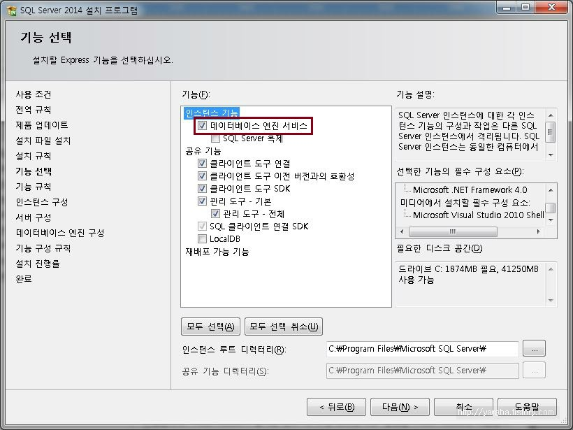

설치 및 설정 변경
설치
-
SQL Server 설치하는 방법에 대해 알아보자.
-
SQL Server 2017 Express 설치 (링크)
-
SQL Server Management Studio 17.9 설치 (링크)
신규 설치 방법
-
새 SQL Server 설치
-
기능 선택

※ 데이터베이스 엔진만 선택하면 좀 더 빨리 설치된다.
-
인스턴스 구성
※ 기본 인스턴스는 SQL SERVER 로 설치되고, 명명된 인스턴스는 직접 인스턴스명을 입력할 수 있다.
-
서버 구성 -> 서비스 계정
※ 계정 이름은 service 에서 SQL Server 를 실행할 계정이고, 시작 유형은 윈도우 부팅 후 service 를 자동으로 실행하는지 유무이다.
-
서버 구성 -> 인증 모드
※ 윈도우 인증 모드를 선택하면 반드시 현재 사용자를 추가해야한다.
※ 최신 SQL Server 는 혼합 모드 사용 시, sa 계정으로 접근할 수 없다.
-
SSMS (SQL Server Management Studio) 설치

Let's Prcactice
-
2번 항목에서 기존 인스턴스에 새로운 인스턴스를 추가해 보자.
-
3번 항목에서 인스턴스 구성 시 명명된 인스턴스로 선택하여 설치해 보자.
-
5번 항목에서 혼합 모드 선택하여 설치해 보자.
-
설치된 SSMS 를 이용하여 다른 사람의 SQL Server 로 접속해 보자.
접속이 되는 PC도 있고, 안되는 PC 도 있다. 이유가 무엇일까?
처음으로
이전
다음